Plant-based basic groceries
August 17 2021,
Jelena Cvetković Š.
VEGAN INGREDIENTS. If you want to make a vegan meal, you don’t need to buy any special vegan product. It is only necessary to use wholesome food. Here we explain what kind of food that is.
With a plant-based diet, it is recommended to eat as little processed food as possible and to consume as much as possible natural food and fresh and organic vegetables and fruits.
Basic groceries
Fruits and vegetables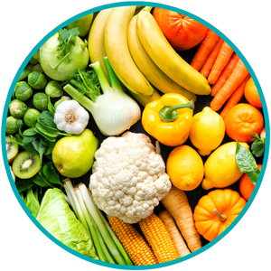
By consuming fruits and vegetables (especially fresh), you will provide your body with vitamins. Use them as much as possible in the diet as a side dish or as a sauce or in salads or smoothies…
Legumes
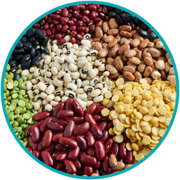Lentils, beans, chickpeas, peas etc. contain a lot of proteins and are very practical for sauces, soups, salads and various spreads. Before use, they need to be soaked, rinsed and cooked. You can also cook them in larger quantities and freeze them for later. It is practical to have already cooked beans or chickpeas that you can quickly turn into a delicious spread.
Nuts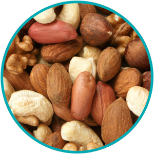
Hazelnuts, walnuts, almonds, Brazil nuts can be added to your meals and they are also great as a snack. They are full of protein, fibre, minerals and vitamins. It is recommended to eat them unsalted, preferably soaked.
Seeds
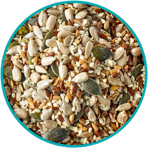Sunflower, pumpkin, sesame, flax seeds... Are an excellent source of healthy unsaturated fatty acids. You can eat them as a snack or add them to increase the nutritional value of salads, smoothies or main dishes. It is said that seeds should be united with water or fire in order to get best benefits from them. Therefore, the best is to eat them either soaked or roasted.
Quinoa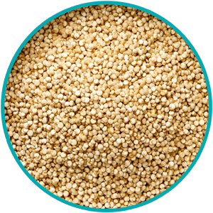
Many consider it a cereal because of its edible seeds, although it is a relative of spinach, chard and beets. This food contains more calcium than milk and more protein than meat. Quinoa grain contains 12 - 16% protein and all 9 essential amino acids that are necessary for every organism to produce protein. In addition, quinoa contains about 5% fat which is much more compared to cereals and is a completely cholesterol and gluten-free food.
Unprocessed cereals
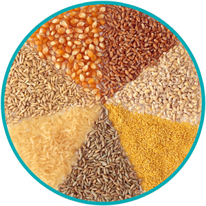It is recommended to eat cereals every day. Unprocessed cereals contain more vitamins, minerals and fibre than their refined versions. You can use brown rice, buckwheat, amaranth, barley, oats, corn, use wholemeal pasta, corn pasta or rice pasta. For creamy soups you may oats flour instead of white flour.
Seitan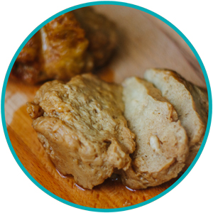
Seitan is a product made of wheat and has a very similar consistency to meat when cooked, so it is also called wheat meat or wheat gluten. Seitan is an excellent source of iron proteins and minerals. It usually needs to be seasoned and marinated before use in dishes.
Tofu and tempeh
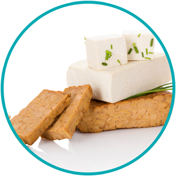Tofu is soy cheese, which is formed in the process of coagulating protein from soy. It has a neutral taste, so it can be seasoned or marinated and prepared in different ways, if desired. Tempeh is made from fermented soybeans which are then compressed into solid blocks which gives it a special texture. Both are good sources of plant proteins.
Soya chunks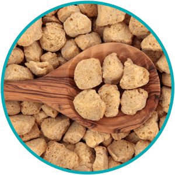
Soya chunks are the most common substitute for vegetable meat in the kitchen. Not only are they very similar in appearance to meat, but they are also much more nutritious than meat. Per 100 g of weight, they contain 50 g of protein, a lot of fibre and almost no fat. Before cooking, they need to be soaked in hot water for at least 10 minutes.
Sesame paste or tahini
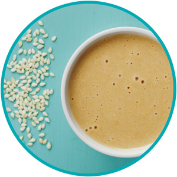Sesame paste is excellent for the preparation of spreads, sauces or as an addition to dishes. From a nutritional point of view, tahini has B vitamins and is rich in unsaturated fats. Tahini is relatively high in calcium and protein and is an excellent source of copper, zinc, iron, manganese, amino acids, and omega 3 and omega 6 oils.
Oils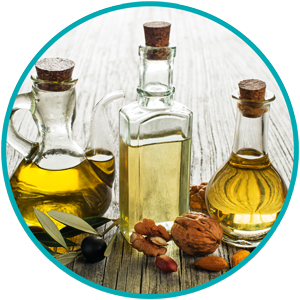
Raspberry, sesame, sunflower, pumpkin, coconut oil… Different oils have their own characteristics and each of them has its positive sides. Choose oils and spreads that are minimally processed and keep them away from sunlight. They should be in a dark bottle.
Sugar substitutes
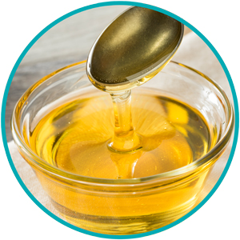We all know about the harmfulness of sugar. This substance has no vitamins or minerals, but only the intoxicating taste of sweet, which creates a false feeling of satiety. Some natural sugar substitutes: jaggery, stevia, agave syrup, maple syrup, coconut sugar, apple jam.
Yogurts, vegetable sour cream and herbal drinks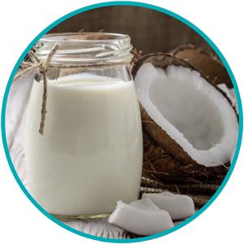
Nowadays, we are witnessing a growing trend of plant based yogurts as well as sour cream and sour cream for cooking. Most of them are made from rice, soy, coconut or oats. Also, in almost every grocery store you can find a wide range of “like milk” drinks made of almond, rice, soy, oats, coconut, hazelnut etc…
Nutritional yeast
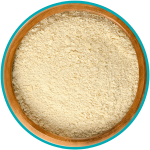Nutritional yeast flakes, also known as Savoury Yeast Flakes, is a deactivated yeast. It gives the food a great taste reminiscent of cheese. You can add it to salads, soups or cream sauces. Nutritional yeast is an excellent source of vitamins, minerals, and high-quality protein. It is a good source of vitamin B group.
Spices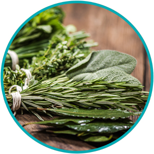
A spice could be a seed, fruit, root, bark or other plant substance primarily used for Flavoring or coloring food. If you buy spice mixes, make sure to check if they contain milk or eggs. Otherwise, there is a plenty of room for exploring spices and their combinations.
Jelly
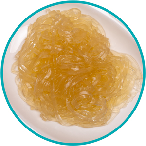On plant-based diet gelatin is not an option, because it is a protein obtained by boiling skin, ligaments and bones with water. You may use pectin-based herbal jelly or products with agar agar. Agar-agar contains few calories and is low in saturated fat and cholesterol.
Photo credits:
iStockphoto